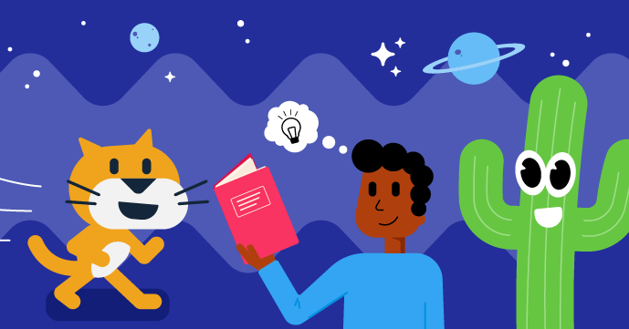
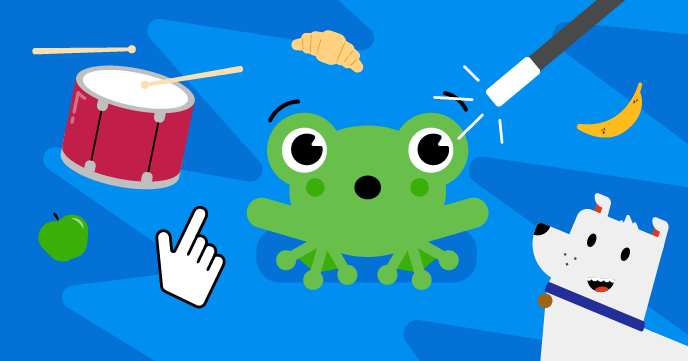
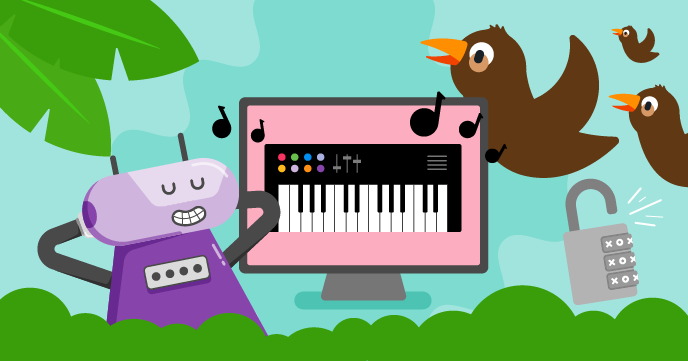

Introduction to Scratch
Learn how to use Scratch, move characters and create your first animation.
Bring your imagination to life! Create games, animations and interactive stories while learning to code.
Explore Scratch LessonsScratch is a beginner-friendly programming language that uses colourful coding blocks instead of complicated commands.
With Scratch, you can create your own games, animations and interactive stories while learning important programming skills.

Start with the basics and develop your coding skills step by step.

Learn how to use Scratch, move characters and create your first animation.

Explore loops, events and conditions to create more exciting interactive projects.

Build your own games and develop your problem-solving skills through creative challenges.
Discover how fun programming can be with Dundalk Code Club.
Explore All Courses